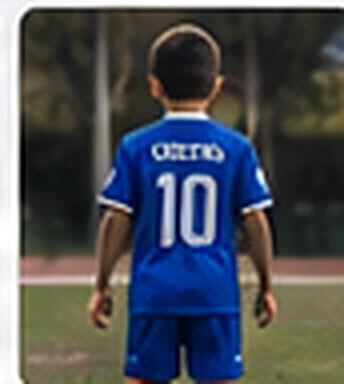
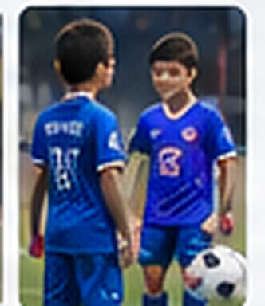

Conoce a nuestro jugador
10
Mateo Sánchez
Infantil · Categoría 2014 | Delantero
Me gusta el fútbol porque me divierto con mis amigos y siempre quiero aprender más.
Partidos12
Goles8
Asistencias4
Entrenamientos18
Participación100%
Mi ficha
NombreMateo Sánchez
Mi dorsal#10
Mi categoría2014
Juego comoDelantero
Mis ganas de aprender
El fútbol es descubrir, compartir y seguir aprendiendo. Lo importante es disfrutar el camino.
¡Siempre aprendiendo!Vamos por más
Barra visual decorativa: no es una evaluación del menor.
Momentos en la cancha
Ver ficha divertida



* Perfil y métricas ficticios utilizados únicamente para visualizar el concepto.